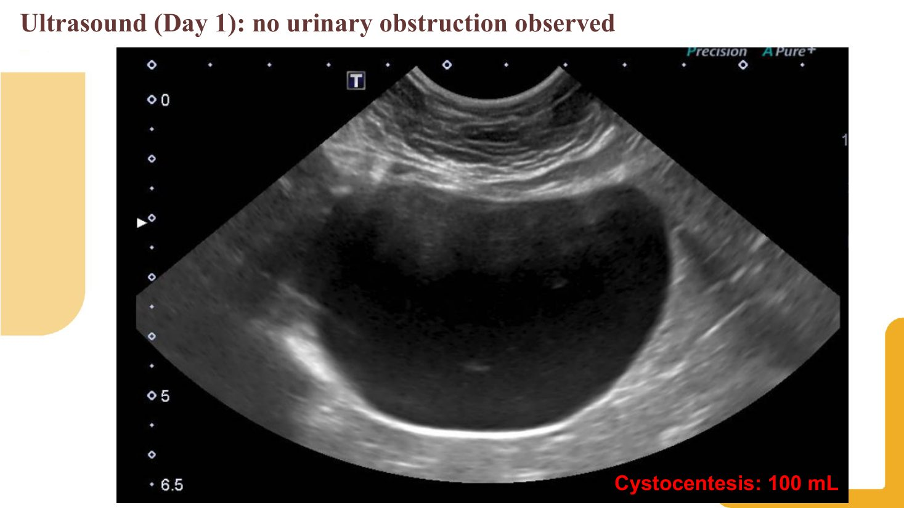
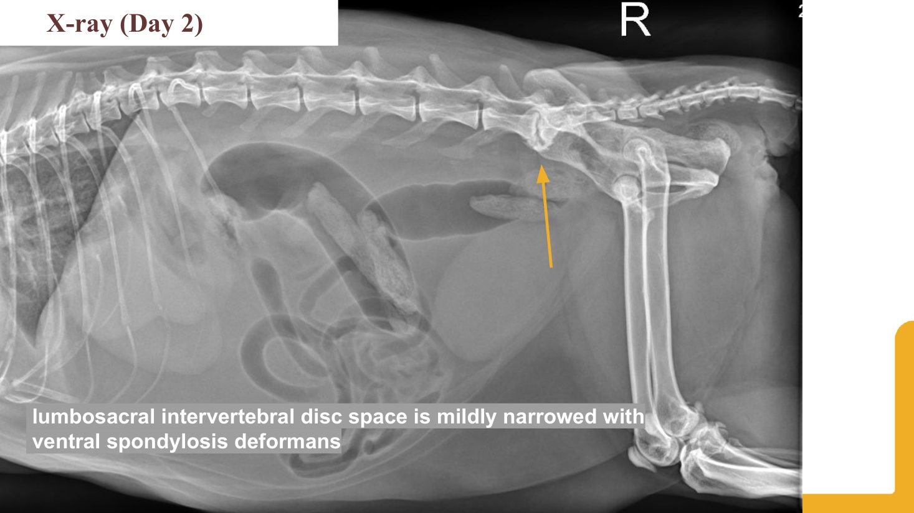
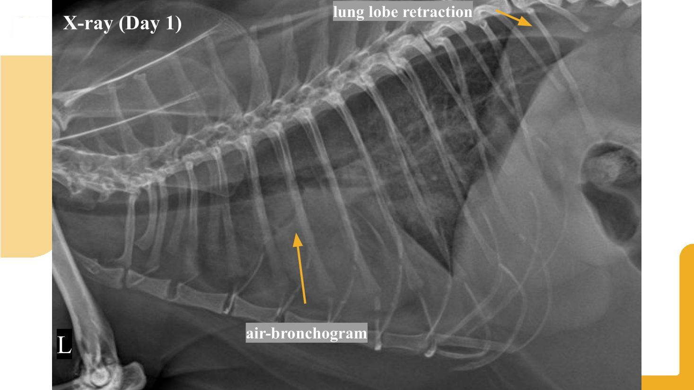
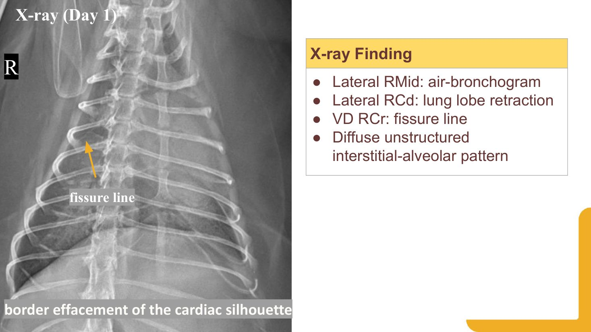
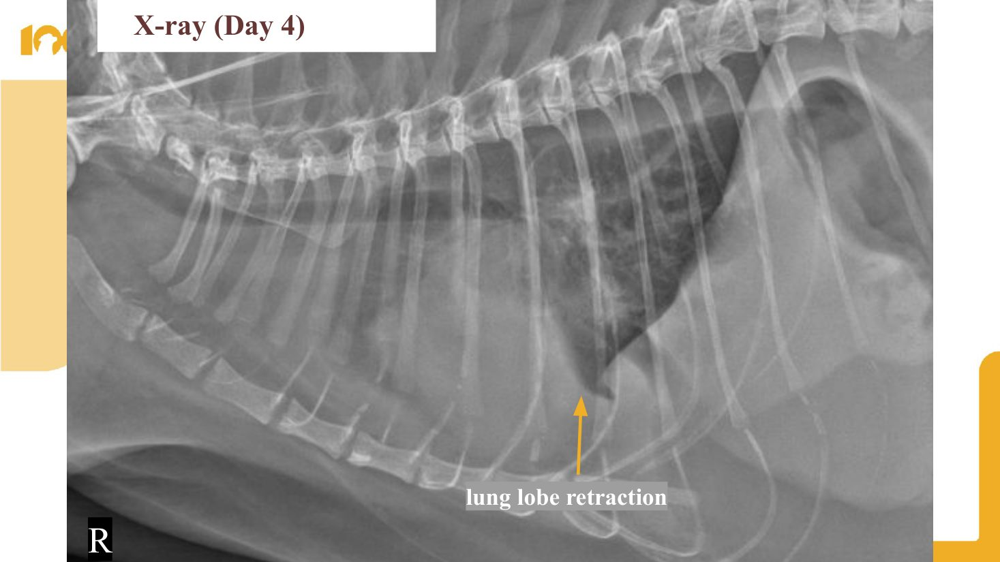

病例摘要與病程
1病例摘要
Neko，14 歲已結紮母貓（DSH），完全室內飼養，家中共 4 隻貓。吃一般罐頭加腸胃保健乾糧，未做寄生蟲預防，也沒有打疫苗。
- 主訴：右側肛門囊完全破裂、流膿。5 天前在其他醫院打過長效抗生素（Convenia），沒有改善。
- 其他：4 天沒排便、2 天沒排尿；食慾差 1 週；最近 2–3 天幾乎不喝水，會盯著水碗看。
- 過去病史：8 個月前因便秘合併嘔吐就診，X 光可見結腸積便。當時開了 mosapride、omeprazole、抗生素和益生菌。
2Day 1 理學檢查（8/8）
- 精神 QAR；體重 6.35 kg（8 個月前 5.6 kg）；BCS 8/9；肌肉輕度流失。
- 黏膜輕度蒼白、CRT 3 秒；呼吸 50–60 次/分；血壓 103/69/77（HR 200）；脫水 8–10%。
- 心肺聽診、周邊淋巴結、腹部觸診都沒有明顯異常；嚴重牙結石。
3病程時間軸
4每日輸液與監測紀錄
| 項目 | D1 | D2 | D3 | D4 | D5（echo） |
|---|---|---|---|---|---|
| LR IV | 30 mL/hr × 10 h | 25 mL/hr × 10 h | 20 mL/hr × 10 h | 20 → 15 mL/hr，各 5 h | 10 → 15 mL/hr，各 5 h |
| 膀胱穿刺 | 100 mL | 75 mL | ? | 65 mL（USG 1.048） | 75 mL |
| In / Out（mL） | 300 / 100 | 250 / 75 | 200 / ? | 228 / 64 | 193 / 75（另抽胸水 140） |
| BP（HR） | 103/69/77（200） | 115/87/98（208） | – | 111/70/79（220） | 92/76/79（240） |
| 體重 | 6.35 kg | 6.4 kg | – | 6.6 → 6.7 kg | 6.7 kg |
| RR | 50–60（>40） | – | – | 24–32 | – |
| 脫水 | 8–10% | 6–8% | 6–8% | 6–8% | 6–8% |
| 營養 | EmerAid，食慾差 | 食慾差 | 食慾差 | NG（1/4 RER 53 mL） | NG（0.45 RER 68 mL） |
這張表本身就是整個病例的答案：每天輸入都遠大於輸出、體重一路上升，脫水評估卻一直停在 6–8%，呼吸速率和體重又沒有每天固定記錄。報告者在「沒做好的地方」也寫到：輸液速率、體重、呼吸速率、輸入／輸出的監測不足，導致輸液過量。
老貓 profiling 與真正的主要問題
1看到老貓，先預設「腎」和「心」
梅醫師一開場就請報告者先停在住院前：不管理學檢查結果如何，看到 8–10 歲以上的貓，就先假設兩件事。
- 腎臟：老貓 CKD 比例很高，化學檢驗正常也可能是 Stage 1。用任何藥之前都要先確認腎臟狀況。
- 心臟：貓是很容易液體過載的物種，即使沒有既有心臟病也一樣。
他稱這個做法為 profiling：依年紀、品種先預設可能的疾病情境。這不是偏見，而是讓醫師在用藥前多一分小心，而不是出了不良反應才回頭想到。
2主訴不等於主要問題
飼主的焦點是屁股，理學檢查上最明顯的也是肛門囊。但梅醫師認為這隻貓最大的問題是一隻肥胖的老貓將近一週沒有好好吃飯。
- 要問清楚吃了多少：吃到 80% 還好；低於 50%，在胖老貓身上就是第一個問題。很多貓其實是吃不到 20% 的 anorexia，而不只是 hyporexia。
- 一週吃很少、喝很少，就足以解釋「沒排便」和「尿少」，應該把 decreased defecation 和 decreased intake 放在一起看。
- 肛門囊也要往回推：貓不會無端端屁股爛掉，一定有易感因素。梅醫師推測的順序是原本就有腸胃問題、慢性便秘 → 肛門囊感染 → 膿瘍破裂。
我明白你來是因為這邊很嚴重，我們會處理。但你的貓現在最大的問題，是一隻胖貓一個禮拜沒有好好吃飯。因為這個原因，我們用藥也會跟著調整。
3病史也要打問號
- 「2 天沒尿」：家裡有 4 隻貓，飼主不可能 24 小時盯著貓砂盆，也分不出是哪隻貓尿的。可能只是尿量很小、被打散，或尿在床底、沙發下。梅醫師自己用 Purina 的智慧貓砂盆記錄後，才知道自家貓平常一天只進去一次。
- 膀胱觸診：阻塞的貓膀胱「硬」比「大」更重要，硬的就算不大也要當機械性阻塞處理。這隻貓雖然胖，但貓不是狗，膀胱真的有問題通常摸得出來；簡報中腹部觸診沒有異常，反而讓他懷疑排尿不是真正的問題。
- 心跳 200 其實偏低：一隻屁股很痛、又這麼乾的貓，HR 200 不算快。狗休克時傾向心搏過速；貓可以過速，也可以過緩，所以這反而提示狀況不穩定。血壓 103 已經接近低血壓，換 Doppler 量可能更低。
4問題清單與鑑別診斷要補的東西
- 問題清單加上進行性厭食、把血壓寫進脫水那一項、加上 BCS 8/9：胖貓較易便秘，慢性便秘的貓肛門囊問題也較多。
- 呼吸急促的鑑別要加上老貓常見的慢性下呼吸道疾病（氣喘）：它主要是氣道而不是肺實質的問題。
- 心肺聽診沒有雜音，跟「沒有心臟病」的關聯性不高。貓和狗不同，沒有雜音不能排除心肌病。
過去病史用藥檢視
8 個月前便秘合併嘔吐那次的處方，梅醫師逐一問「適應症是什麼」：
| 藥物 | 梅醫師的看法 |
|---|---|
| Omeprazole（0.5 mg/kg） | PPI 沒有止吐作用；要嘔吐就該給止吐藥。若懷疑食道炎、怕狹窄可以理解，但適應症不明顯，而且劑量偏低，可能根本沒效。全世界都在 overuse 制酸劑，用 PPI 前先想有沒有適應症。 |
| Mosapride | 對便秘 OK。 |
| Clavamox、Colistin（可萊適） | 想不到任何適應症。已經腸胃不舒服、在嘔吐的動物，抗生素常見的副作用正是嘔吐和軟便，只會讓情況更糟。 |
| 益生菌、保健品 | 沒有特別評論。 |
梅醫師也提醒：檢查任何處方時都要順便核對劑量是否恰當。適應症不強、劑量又偏低的藥，最後往往只是多一個副作用來源。面對飼主「之前老醫生都這樣開」的壓力，可以拿指引當依據，告訴他們我們在執行實證醫學、每天都在調整做法。
梅醫師課堂上推薦的是歐洲 ENOVAT 的急性腹瀉抗生素指引（Jessen et al., Vet J 2024;307:106208；GRADE 方法，4 項強建議＋3 項條件式建議）。指引對象是狗，但抗生素管理的邏輯可以參考。
輕到中度（含出血性、AHDS）：強烈建議不要用抗生素（高確定性證據）；抗生素對腹瀉天數、住院天數、惡化、死亡都沒有臨床意義的效果。
重度（發燒、輸液沒反應、懷疑敗血症）：條件式建議用注射抗生素 3–7 天；非危急選 amoxicillin-clavulanate 或 TMS，危急則四象限涵蓋（例如加 fluoroquinolone）。
益生菌：系統性回顧發現縮短病程的效果不明顯（證據極低到中等），但沒有副作用；如果「一定要開點什麼」，益生菌、口服補液、止吐藥比抗生素合適。
無尿 vs 排尿障礙
1前腎性不是「排尿障礙」的鑑別
報告者把「沒有排尿」整理成 voiding dysfunction 的鑑別，並分成 neurogenic 與 non-neurogenic。梅醫師稱讚這種「先列大類再細分」的方法，但指出分類要修正：
- 前腎性、腎性是「造尿」的問題，也就是 oliguria／anuria，不是排尿的問題。必須先排除它們，才能把問題叫做 voiding disorder。
- Voiding disorder 只聚焦在膀胱與尿道，先分 neurologic vs non-neurologic，non-neurologic 再分 mechanical（腫瘤、結石、尿塞、狹窄）與 functional（例如功能性出口阻塞）。
2只看輸入輸出，就能推出問題在哪
Day 1 輸了 300 mL，把膀胱抽到很小只抽出 100 mL。梅醫師問：只靠這個數字，證明了什麼？
- 如果是下泌尿道排不出來，膀胱應該很大，抽出的量會「對得上」輸液量。
- 如果是腎性、腎臟造不出尿，抽出量應該很少很少；但 75–100 mL 對一隻貓並不低，Day 4 尿比重 1.048 也表示濃縮能力 OK。
- 剩下的就是前腎性：身體各處還在缺水時，腎小管在 ADH、醛固酮作用下把水和電解質留住，只把「廢物」送到膀胱。膀胱尿少，代表液體赤字很大，而不是排不出來。
不靠影像、不靠實驗室，只看輸入和輸出，就可以很有信心地說：這不是下泌尿道的問題，而是腎性或前腎性的問題。
這其實是一個推理遊戲：水到底去了哪裡、體重到底去了哪裡。
3體重的心算
6.35 kg、脫水 10% → 6.35 × 0.1 ≈ 0.64 kg 的缺水量，補足後的目標體重大約 6.99 kg。體重接近這個數字時，膀胱應該開始慢慢變大；如果體重繼續上升、膀胱卻還是小的，就算沒有血檢也該懷疑少尿或無尿，或液體跑到了第三空間。
每天穿刺抽尿第一天可以接受，但梅醫師不建議把它當成例行治療：它沒有回答臨床問題。真正懷疑阻塞的貓，標準做法是放導尿管。另外，輸液前抽到的那管尿最有價值，至少要用折射儀看尿比重。
4這隻貓的排尿問題
Day 2 的 X 光看到腰薦椎間隙變窄與骨贅，報告者也整理了神經性排尿障礙的鑑別。梅醫師的結論是：這隻貓不是排尿障礙，排尿障礙留到下次再談。她可能也有疼痛或壓力相關的 FIC 成分，但核心問題在別處。


梅醫師推薦把 Kendall et al., J Vet Intern Med 2024;38:878–903 當作查鑑別診斷的工具書：多年教科書和文獻的整理、流程圖和完整的鑑別表都在裡面。重點如下（對象是狗，套用到貓要注意）：
先分儲尿障礙還是排尿障礙：靠病史、觀察排尿（可請飼主錄影）和排尿後殘尿量（PVRV）。PVRV 0.2–1.0 mL/kg 正常、>3 mL/kg 表示尿滯留、1–3 mL/kg 要配合臨床判斷；尿完 10 分鐘內用超音波量（體積 = 長 × 寬 × 高 × 0.52），避免導尿造成 UTI。
每隻都要做：直腸觸診（尿道、攝護腺）、膀胱觸診、針對性神經學檢查（步態、後肢姿勢反應、脊髓反射、尾巴張力、背痛），以及尿液分析加培養。有糞便失禁、脊椎痛或前後肢步態不協調時，做完整神經學檢查，最好再做 MRI。
排尿障礙分類：功能性出口阻塞（FOO，排除機械性原因後用 α 阻斷劑如 tamsulosin，必要時加 diazepam）vs 機械性出口阻塞（MOO，視為急診，優先膀胱鏡介入）。阻塞 6 天內解除逼尿肌可完全恢復，超過 4 週可能永久受損。
血檢判讀：低鈉高鉀
1Day 1 與 Day 3 血檢
| 項目 | Day 1 | Day 3 | 參考值 |
|---|---|---|---|
| HCT（%） | 35.4 | 33.6 | 30.3–52.3 |
| RETIC（K/µL） | 137.7 ↑ | 196.2 ↑ | 3.0–50.0 |
| WBC（K/µL） | 26.05 ↑ | 19.73 ↑ | 2.87–17.02 |
| NEU（K/µL） | 23.50 ↑ | 17.91 ↑ | 2.30–10.29 |
| EOS（K/µL） | 0.49 | 0.09 ↓ | 0.17–1.57 |
| PLT（K/µL） | 289 | 126 ↓ | 151–600 |
| Na（mmol/L） | 148 ↓ | – | 150–165 |
| K（mmol/L） | 5.2 | – | 3.5–5.8 |
| Na:K | 28 | – | – |
| Cl（mmol/L） | 112 | – | 112–129 |
| TBIL（mg/dL） | 0.4 | 0.5 | 0.0–0.9 |
| CREA（mg/dL） | – | 1.1 | 0.8–2.4 |
| ALB（g/dL） | – | 2.4 | 2.3–3.9 |
| fSAA（µg/mL） | <5.00 | – | 0–5 |
| 血漿 TP／Glob／A:G | – | 7.7／5.3／0.45 | – |
Day 1 血液抹片：沒有中毒性變化，可見少量帶狀嗜中性球。
2每個數值都要問「合不合理」
梅醫師的習慣是：報告上每一個數值，即使沒有被標示異常，都要想一下它放在這個病例上合不合理。
- 鉀 5.2 太高了：一隻一週沒怎麼吃的貓，鉀應該掉到 3 以下，「中間偏高」其實是不正常。
- 鈉 148 太低了：這麼乾的貓，鈉應該往上升；這隻貓瘦體時應該在 160 幾，低於 150 他就會覺得不正常。
- 膽紅素 0.4 正常：很好，這點讓人放心（擔心長期厭食的脂肪肝）。
3低鈉、高鉀、低 Na:K 的鑑別
他會把三件事分開想：單看高鉀 → 先想腎臟；單看低鈉 → 奇怪但沒有明顯方向；合在一起看 Na:K 偏低，最常見的兩個原因是腎上腺皮質功能低下和 AKI，第三是體腔積液。
積液造成低鈉的機轉：血管內容積低 → 啟動 RAAS，下游 ADH 上升 → 保水。當保水的比例高過保鈉，就會產生稀釋性低鈉。一般脫水或休克時保水保鈉是成比例的，鈉應該往上；但在慢性、大量積液的病例（例如腎衰竭的狗肚子裡兩三公升腹水）鈉可以掉到 127–130。梅醫師也坦言，為什麼有些病例會這樣、有些不會，並沒有完美的解釋。
看到這個比例，我當下就會想：這隻貓會不會已經有積液了？
梅醫師提到，如果是狗出現類似 Addison 的電解質，他們一定會補做糞檢，因為鞭蟲（Trichuris vulpis）會造成 pseudohypoadrenocorticism（經典文獻：DiBartola et al., JAVMA 1985）。
機轉（推測）：大腸黏膜嚴重發炎、出血 → 鈉與水流失、低血容 → 遠端腎小管鈉流量下降 → 鉀排不出去。醛固酮多半正常或偏高，是續發性反應。
區分：大腸型黏液血便；基礎 cortisol 通常 >2 µg/dL、ACTH 刺激反應正常；驅蟲加輸液後電解質幾天內恢復。Na:K 比不能拿來確診 Addison's，要靠 ACTH 刺激試驗。
陷阱與治療：潛伏期 74–90 天、排卵間歇，單次漂浮常偽陰性，懷疑就經驗性驅蟲（fenbendazole 50 mg/kg PO q24h × 3–5 天，3 週與 3 個月後重複）；環境蟲卵可存活數年。
其他假性愛迪生：反覆抽胸水（尤其乳糜胸）、腹水、尿腹或尿道阻塞、AKI、沙門氏菌或十二指腸潰瘍穿孔、懷孕（灰獵犬），以及秋田犬溶血、EDTA 污染等假性高血鉀。
4預算有限時，先驗什麼
- 14 歲不吃飯的貓：腎指數和電解質一定要；白蛋白與總蛋白也很重要，嚴重脫水、準備大量給液體前要有基準值。
- 可以選的話，他寧可做完整生化，CBC 則用 PCV／TS 加自己看血液抹片代替：TS 可以補白蛋白資訊、看黃疸；抹片至少確認血小板 OK，做侵入性處置前比較安心。在美國這是急診與住院的日常，也要求住院醫師和學生自己看抹片。
- Day 3 那次 CBC 他認為可以不驗，效用不高，資源應該放在別處。
5SAA：「這會改變我做什麼嗎？」
被問到 fSAA 時，梅醫師很直接：這隻貓有沒有發炎，看屁股就知道了；白血球正常不會讓他覺得沒發炎，白血球高也只是確認已知的事，對治療沒有額外價值。在美國 SAA 也不在院內標準血檢裡，要送外部實驗室，下禮拜才知道，對急性病例沒用。
這會改變我做什麼嗎？如果答案是不會：不會改變治療計畫，也不會改變我和主人的對話，那就是一個很好的問自己、也問別人的問題。要學會打破習慣。
他舉例：重症外科每 8 小時抽一次動脈血氣，連續兩天完全正常還在抽，「除了把貓變成貧血之外，你們到底想達成什麼？」
FAST／TFAST：輸液前先掃
1下一步是診斷，不是治療
報告直接從問題清單跳到治療，梅醫師提醒中間還有「診斷」這一步。報告病例時，請想像當下的醫師是你自己：下一步應該做哪個診斷？這樣才看得到思考過程。報告者答 X 光；梅醫師說他更喜歡一個可以立刻做的檢查：FAST。
2只看三件事
- 肋膜積液
- 心包膜積液：有的話，十有八九這隻貓已經有心臟病。
- 左心房大小：低血壓還心搏過速，一掃左心房偏大甚至很大，就知道可能已經在心衰，整個檢查方向都會改變。
他認為這三樣做得好，九成的病例都能很有信心地決定下一步，而且有人在旁邊教幾次就能上手。B-lines 則在肺炎或已有肺部滲出時很好用：探頭隨便一放，從近場到遠場整片都是白的。熟練之後他也會順便看左心室壁厚，但初學時不必：貓很乾時 FAST 很難評估壁厚，也不想過度判讀。
3什麼時候做
我真的建議每一隻進來的貓，只要你要給皮下或靜脈輸液，或是牠呼吸過快、有任何呼吸道主訴，都應該做。
我自己甚至在每一隻貓鎮靜之前都會做。牠可能是腸胃問題進來，但已經 12 歲了，我怕我給了液體牠心衰，是我的錯。
- 他會先跟飼主講清楚：我不是心臟科、也不是影像科醫師，做了還是可能出問題，但機會低很多。
- 從商業角度看，多掌握資訊才能主導飼主的下一步（「我已經找到了，不做的話可能會怎樣」），對醫院有好處，也是在練習醫師的技能。他所在的醫院 FAST 理論上要收費，但仍鼓勵住院醫師多做。
- 如果沒有超音波、或飼主不願意多付錢：抽血時順便做一個 SNAP NT-proBNP，在這個病例上相當有必要。
- FAST 也可以看膀胱：胖到摸不清楚時，掃一下膀胱很小，就知道牠只是很乾，所以看不到排尿。
4實務技巧
- 不用剃毛：探頭夠好就把毛撥開一點。厚毛狗可能只能看有沒有明顯積液和心腔擴大；想看仔細就剃一個小窗，位置再低一點。
- 貓的心臟很靠胸骨、位置低。如果腹部本來就要剃毛，可以把鬆鬆的腹部皮膚往上拉到胸側撐著掃，視窗常常很漂亮。這不是正式心臟超音波，不用完美。
5住院中的 FAST 監測規則
- 梅醫師要求住院醫師每天幫貓做兩次 FAST；更懷疑心臟、又沒有心臟超音波可以確認時，做三次。
- 只要看到任何積液，就立刻停 IV 輸液，在病歷上寫大字：「可能液體不耐受」。
- 連 IV 藥物的體積都要管：一支 10 mL 的藥請護理師分 3 小時慢慢打，或改皮下。一旦懷疑，就是 no IV fluid。
- 抓得夠早的話，12 小時後再掃積液通常就消失了，這本身就很支持心因性、液體不耐受。
切面：CTS（看 glide sign、排除氣胸）、PCS（積液、心臟、LA:Ao）、DH 劍突下（積液、CVC）；肺部搭配 Vet BLUE 每側 4 區。呼吸困難的貓維持趴姿，不要翻成仰躺。
肋膜 vs 心包膜積液：肋膜積液呈三角形、肺葉漂浮在液體裡；心包膜積液是環繞心臟一圈、外圍有亮白心包膜線。注意貓的心包膜脂肪是高回音，不是積液；DH 切面橫膈上方的肺「鏡像」消失、換成無回音液體表示有積液。貓 CHF 常同時有肋膜積液加少量心包膜積液。
LA:Ao：右側胸骨旁短軸心基部（主動脈瓣「賓士標誌」），舒張早期（主動脈瓣剛關閉）量。貓 <1.5 正常、≥2.0 為重度（CHF、ATE 風險高）；看到煙霧狀回音表示 ATE 風險高。左心房正常時心因性肺水腫可能性很低。
B-lines：從肋膜線垂直延伸到畫面底、會蓋掉 A-lines、隨呼吸滑動（Z-lines 短、會衰減、不蓋 A-lines）。每點 >3 條為陽性；心因性肺水腫在貓多為多灶不規則、狗以肺門周圍與後背側為主；肺炎在前腹側且不對稱。輸液中 B-lines 新出現或增加就要減速或停止輸液；給 furosemide 後減少表示有效。
止痛與住院用藥檢視
1疼痛試驗
呼吸快可能有疼痛成分。如果 FAST 掃完心臟看起來沒大問題、外面又有傷口，可以做止痛試驗：給止痛藥看牠有沒有明顯平靜下來，通常一小時內就看得到改善，不用等很久。反正已經留院，可以直接給完整的鴉片類，例如 methadone。
2NSAID：先等等
- 任何以食慾問題、腸胃問題來的動物，他都不碰 NSAID。
- 當時還沒有化學檢驗。這隻貓很可能是慢性便秘 → 痛 → 不吃 → 有 AKI 風險；腸胃引發 AKI、或 AKI 導致不吃，在這裡機率都很高，所以 NSAID 要非常小心，即使外觀看起來很發炎。
- 任何動物（特別是老的）給 NSAID 前都要看腎、肝，最好有尿比重。健康的年輕外傷犬、飼主拒絕驗血時，可以給，但要在病歷寫清楚「飼主選擇不做化學檢驗，已告知 NSAID 對肝腎的潛在副作用」。
- 梅醫師說自己十年來用 NSAID 不超過十次，貓幾乎想不起來。他的病人通常腎、肝、心都有問題，加上看過太多 NSAID 後 AKI、胰臟炎的病例；他甚至為了自家貓拔牙後要不要給 NSAID，和朋友各自翻 paper 大吵一架，最後沒給。
- 但他也說 NSAID 沒有這麼恐怖：新的指引認為 CKD Stage 1–2 大致可以，先給幾個劑量、看反應、複查血檢，穩定再考慮長期給。前提是飼主會回來複查。做尿道狹窄消融的年輕狗，他有時給半劑量 carprofen 一到兩次，效果也明顯。
我的宗旨是永遠不要扣留止痛，因為這不人道。
被問到鴉片類會不會造成尿滯留：要看問題是什麼。很多 FIC 的貓尿不出來正是因為痛，就像人有 UTI 每次尿都痛。所以先處理疼痛，真的出現副作用再想下一步。
3逐一檢視住院與出院用藥
| 藥物 | 適應症 | 梅醫師的看法 |
|---|---|---|
| Robenacoxib（Onsior） | 傷口止痛、抗發炎 | 對外傷應該有幫助，但這段期間貓還是沒在吃，問題可能不會好轉。 |
| Misoprostol | 預防 NSAID 的腸胃毒性 | 不喜歡用。只在有文件證實的 NSAID 毒性或過量時考慮。它在人是用於人工流產，會造成胃痙攣、腹部不適，在已有腸胃問題的貓身上會更不舒服。 |
| Pentoxifylline | （報告者推測是抗發炎） | 不會用，適應症很少。 |
| N-acetylcysteine | （報告者推測是化痰） | 劑量太低，而且除了特定適應症外證據都很差；有些重症醫師喜歡在肺炎時用來化痰，但他認為沒有真的效果。不要拿來霧化：可能造成支氣管收縮。 |
| Metoclopramide、PPI | 不吃飯的貓常被開 | 最重要的其實是 maropitant：不吃飯可能是因為噁心，即使沒在吐也一樣，應該當成核心用藥，一天一次也方便。 |
有時候是 less is more。就算有適應症、你覺得可能有幫助，如果沒有很明顯的幫助，又是一隻要餵藥的貓，我都會盡量簡化。
輸液策略：可以加，收不回來
1休克 bolus
Day 1 的 30 mL/hr 是怎麼算的？梅醫師分享他自己的做法（前提是已確定沒有心臟問題）：
- 看起來夠休克就給 bolus：10 mL/kg，20–30 分鐘給完；6 kg 的貓大約 60 mL over 30 分鐘。貓會給得比狗慢一點。
- 老貓即使心臟沒大問題、血壓沒那麼糟，他也偏向只給一半。牠不是要在你面前死掉，這個狀態在家裡至少已經一天了，慢一兩個小時不是世界末日。
- 貓最多兩次 bolus：第一次效果不好，先確認心臟，再給第二次；還是不行就看體重、做 FAST、掃膀胱，考慮升壓劑，而不是一直給。狗可以給到 10 mL/kg 重複約三次。
- 重複三次還不行，就要懷疑不只是低灌流：血管張力差需要升壓劑？敗血症需要的是抗生素？嚴重貧血需要的是血而不是液體？不要重複八次才承認沒效。
你隨時可以再加，但你不能把已經給的液體拿回來。我應該把這句印在這邊，每個人我都講。
2維持輸液的上限
- 用理想體重算：BCS 8/9 的貓用實際體重乘以 5，等於多給了六、七倍，因為脂肪也被算進去了。6 kg 的胖貓應該當 5 kg 算。
- 很乾的貓他一開始抓大約「4 倍」；平均來說，一隻貓的高輸液速率上限約 20 mL/hr，他盡量不超過。需要更高時，這隻貓需要的可能是 bolus 而不是持續輸液。
- 即使給到 20 mL/hr，也要在 6 小時內重新評估。貓的液體耐受度「很會騙人」：一開始看起來 OK，6 小時後可能已經有積液。
課堂中提到的「5 倍體重」是把維持速率（mL/hr）粗估為體重（kg）× 5 的速記法。套到 Neko 身上：6.35 kg × 5 ≈ 30 mL/hr，正好是 Day 1 的速率。如果改用理想體重約 5 kg，再依梅醫師老貓、可疑心臟的原則減量，起始速率會落在 10–20 mL/hr 左右，並在 6 小時內用 FAST、體重、呼吸速率重新評估。
影像判讀與心臟超音波
1Day 1 胸腔 X 光
報告者的判讀：右中葉 air bronchogram、右後葉肺葉回縮、VD 右前葉 fissure line、瀰漫性無結構間質–肺泡型病灶，心臟輪廓模糊。鑑別診斷擴大為心衰／輸液過量／腎病引起的肺水腫、肺炎、肺血栓栓塞、各種原因的肋膜積液等。


梅醫師的看法：
- 報告者標的那塊區域比較像密度增加的區域，他不確定能不能稱為真正的肺泡型；整體甚至有點像很重的支氣管間質型。
- 肺葉回縮很明顯，心臟輪廓也模糊，但心臟沒有明顯變大。
- 只看這張 X 光選前兩名鑑別：貓的細菌性肺炎比例比狗低很多，不會是他的第一或第二；病史上牠會咳嗽，所以會懷疑嚴重氣喘（支氣管黏液栓塞也可以讓整個肺看起來像肺泡型）。
- 肺水腫是「結果」不是原因。如果只能選一個，從分布來看他會懷疑心因性肺水腫，這時 FAST 一看就知道：左心房大、甚至有一點心包膜積液，所以心臟邊界才不清楚。

2Day 5 心臟超音波
| 項目 | Neko | 參考範圍 |
|---|---|---|
| 室中隔／左心室游離壁 | 沒有明顯增厚 | – |
| RVIDd | 10.3 mm | 2–6.4 mm |
| LA/Ao | 2.3 | <1.5 |
| LVIDd | 14.3 mm | 12–18 mm |
| FS | 58% | 25–45% |
| 胸水 | 抽出 140 mL，TP 2.1 g/dL（漏出液），抹片無特殊發現 | – |
結論為左右心同時衰竭，鑑別 RCM／UCM 或 HCM。Day 5 出院用藥（BID × 5 天）包括 pimobendan 0.18 mg/kg、sildenafil、spironolactone、furosemide 0.4 mg/kg，另有 oxalamine、pentoxifylline、acetylcysteine、prednisolone，以及 mosapride、biodiastase、可萊適、silymarin 等腸胃與保肝藥。
對照第七節「less is more」的原則，這張出院處方同時有心衰用藥、化痰止咳、類固醇、抗生素與多種腸胃保健品；對一隻已經厭食、靠鼻胃管給藥的貓，每多一種藥就多一份給藥負擔和副作用風險。Day 6 的嘔吐正是發生在經鼻胃管給藥之後。
如果重來：心衰合併脫水與厭食
1早放鼻胃管，用腸道補水
Day 4 時體重上升、輸入大於輸出、尿比重仍 1.048：這幾天的證據更支持一開始的懷疑。這是一隻很需要補水、但心臟承受不了的貓，應該很早就放 NG tube，不打任何 IV。
- 如果心臟科超音波告訴他牠不太能承受液體，他當天就放 NG tube，改用腸道補水。
- 同時做腹部超音波，確保沒有腫塊這類會改變全部計畫的東西；排除後就把牠當作有腸胃病的貓治療，只是水從鼻胃管補。
- 腸道補水不可能比 IV 快，牠會處於脫水狀態比較久；要提高腸道給水量時，他會同時給促動力藥 CRI，確保腸胃負擔得了。
- 腸道補水補太多也一樣會過載。真的是完全心衰的話還要給利尿劑，更棘手，所以要先跟飼主講：預後比較差、拉回來的時間比較長，心臟就是限制因素。
- 如果一直不吃、但心臟還好、也沒有積液，等幾天穩定後可以問飼主要不要承擔麻醉風險，花 10 分鐘放 E 管再讓牠回家。
2鼻胃管給多少
- 可以算出「一小時應該給到多少」，但牠不一定負擔得了：最後胃裡都是水、沒有往下走，也沒用。
- CRI 或 bolus 都可以。6 小時後用 FAST 掃胃：放了五六十毫升進去，腸胃沒在動的話胃會很明顯地大；看起來還好，表示負擔得了（或促動力藥、止痛有效），可以考慮再往上加一點。
- 如果牠看起來已經好很多、比較有互動，就不要硬推，維持速率，下一個 6 小時再評估。
- 很久沒吃的貓一開始不能給太多熱量；需要補水時，可以把食物和水混在一起給。
3資源有限時的版本
梅醫師的醫院有內科、心臟科、外科可以分工處理屁股的問題。但在沒有這麼多資源的情況下，他會做的是：每天做 FAST、放 NG tube、盡量掃一下腹部。他認為 FAST 在台灣一般大型診所都做得到，真的不難。
任何住院管理的重點都是監測。一開始的治療就算比較積極，也不會真的決定生死；只要抓得夠早，通常都是可逆的。就算心臟有問題，你給了三十、六十毫升，只要那時有監測、看到問題就停，不是世界末日。
4飼主溝通：怎麼呈現、怎麼排序擔憂
飼主每天都願意回來，Day 4 也同意放鼻胃管，只是擔心的事情比較多。梅醫師認為，飼主願意做什麼往往取決於醫師怎麼呈現、怎麼排序自己的擔憂。一開始已經在擔心心臟、FAST 可能也看到問題時，就要說出來：這隻貓其實不適合再輸液；一隻胖貓一週不吃、還在吃 NSAID，後果比鎮靜放鼻胃管的風險高很多。「我明白你不想放鼻管，打 IV 最方便，但牠可能完全不能打 IV。」
報告者在簡報最後附上一張液體過多的處置流程圖，把兩種情況分開處理：
Overhydrated（體重增加、輕度或局部周邊水腫）：停止 IV 輸液、增加活動量，可能就足夠。
Fluid overload（呼吸窘迫、中到重度多灶性周邊水腫、腎／肝／腸胃功能異常）：需要積極處置：停止輸液、給氧、利尿劑、增加活動、胸腔或腹腔穿刺移除積液、轉診做血液透析，並考慮停用 ACEi／ARB 以改善 GFR。
結局與反思
1報告者的反思
- 診斷計畫延誤，擔憂沒有和飼主充分溝通、處理，治療計畫本身可能造成進一步傷害。
- 輸液速率、體重、呼吸速率、輸入／輸出的監測不足，導致液體過量。
2梅醫師的總結
- 以現有資訊，這是一隻老了、不幸死於心衰竭的貓，可能本身也有一些下呼吸道疾病。牠不是排尿障礙。
- 經驗較少的醫師很容易被表面明顯的症狀帶偏：動物外面有明顯問題，注意力就被帶走。這在他收到的轉診病例裡很常見，不只是經驗問題。
- 主持人的總結也獲得梅醫師同意：一開始不吃可能是腸胃問題，肛門囊破裂後更不舒服；不吃不喝所以尿和便都少；來院後補了較多液體，心臟負擔不了。如果當初慢慢補，或許還有機會挽回。
3Take-home messages
- 老貓先預設腎和心，用藥、給液體前先確認。
- 每隻要輸液、呼吸快、或要鎮靜的老貓，先做 FAST：肋膜積液、心包膜積液、左心房。住院中每天兩到三次，看到積液就停 IV。
- 主訴不等於主要問題：胖老貓一週沒吃，才是第一優先。
- 無尿先想造尿（前腎性／腎性），排除後才叫排尿障礙；輸入輸出和體重就能推理水去了哪裡。
- 每個數值都問合不合理：厭食的貓鉀應該低、脫水的貓鈉應該高。
- 每個檢查都問「會改變我做什麼嗎」，每個藥都問適應症與劑量；less is more，maropitant 是厭食貓的核心用藥。
- 液體可以加，收不回來：用理想體重算、貓的上限約 20 mL/hr、6 小時內重新評估；需要補水但心臟不行時，早放鼻胃管。
參考資料
-
Congestive Heart Failure in a Cat（病例簡報，聯盟動物醫院；主治：林智湧醫師，報告者：明菊馨醫師）。含病患 Neko 病歷、血檢、X 光、超音波與每日管理紀錄。2026-10-09。
-
10-09 病例討論錄音完整記錄（梅醫師主講）。高齡貓心腎優先管理：FAST／TFAST 篩檢、液體不耐受與循證用藥。
-
Jessen LR, Werner M, Singleton D, et al. European Network for Optimization of Veterinary Antimicrobial Therapy (ENOVAT) guidelines for antimicrobial use in canine acute diarrhoea. Vet J. 2024;307:106208.
doi.org/10.1016/j.tvjl.2024.106208 -
Scahill K, Jessen LR, Prior C, et al. Efficacy of antimicrobial and nutraceutical treatment for canine acute diarrhoea: A systematic review and meta-analysis for European Network for Optimization of Antimicrobial Therapy (ENOVAT) guidelines. Vet J. 2024.
pubmed.ncbi.nlm.nih.gov/38049062 -
Kendall A, Byron JK, Westropp JL, et al. ACVIM consensus statement on diagnosis and management of urinary incontinence in dogs. J Vet Intern Med. 2024;38(2):878–903.
pmc.ncbi.nlm.nih.gov/articles/PMC10937496 -
DiBartola SP, Johnson SE, Davenport DJ, et al. Clinicopathologic findings resembling hypoadrenocorticism in dogs with primary gastrointestinal disease. J Am Vet Med Assoc. 1985;187(1):60–63.（鞭蟲症假性愛迪生的經典病例系列；書目依記憶整理，引用前請核對原文。）
-
TFAST／Vet BLUE 判讀要點為個人整理（Lisciandro 的 TFAST 切面架構與 LA:Ao、B-lines 常用判讀門檻），各研究的門檻略有差異，請以原始文獻為準。